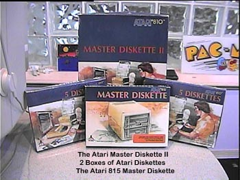

The Atari Disks

Atari users who
purchased an Atari 810 disk drive were ready for a new world of fast easy
access to their software and data. Atari had shown a
copy of DOS 1.0 at the Winter CES when they first displayed the original
Atari 400/800 computers. Users who purchased the new
Master Disk II were treated with Atari's DOS 2.0s which was an easy to
use menu-driven DOS which allowed users quick easy access to commands for
formatting, copying, deleting and running software. Atari
also sold convenient 5 Paks of 5.25" diskettes for use with their Atari
810 disk drives.
Only a small
handful of fortunate users ever got to own an Atari 815 360K Dual Disk
Drive System. Master disks for this drive were made available
but were quickly stopped and pulled when the 815 was immediately discontinued
by Atari because the units had to be hand built and even though they carried
a $1500 price tag, there was still no profit for Atari on the 815 disk
drives.